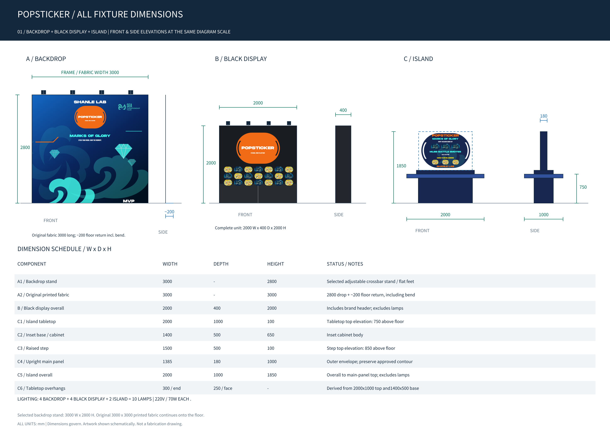
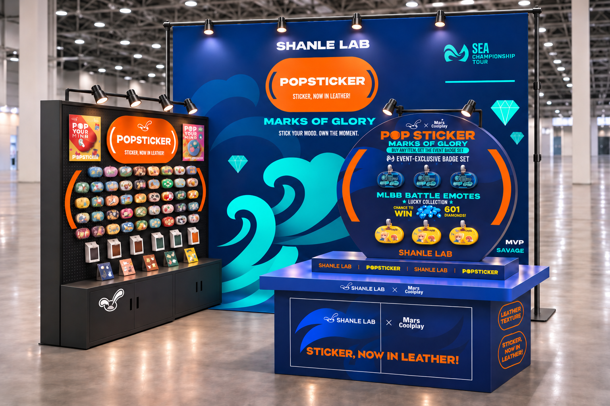
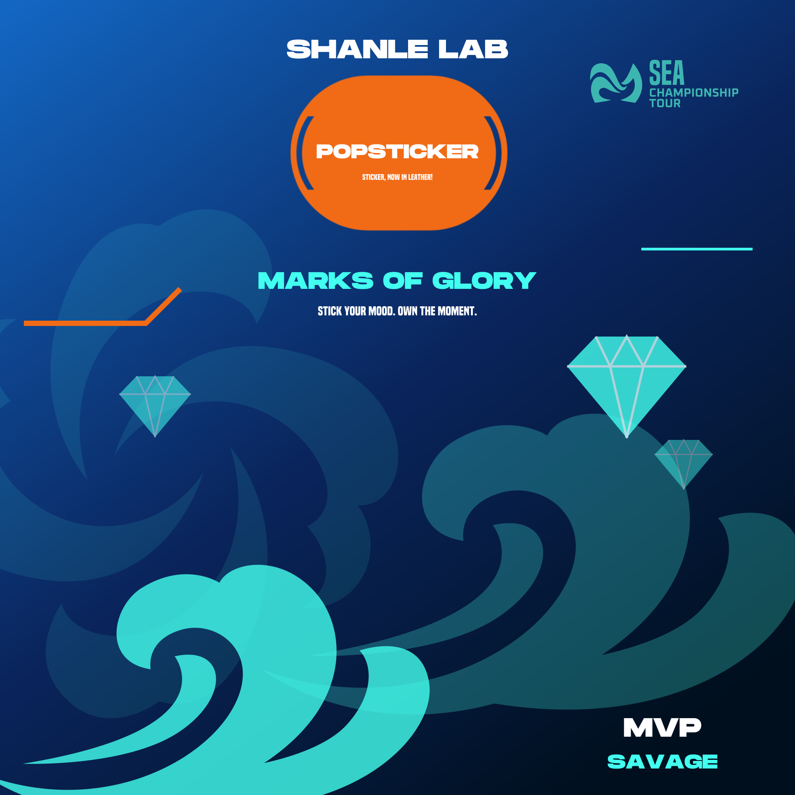

完整英文尺寸三页
01 · 全部设备正侧面与尺寸表


02 · 中岛部件细尺寸


03 · L形俯视与落地布位置

背景架采用用户指定的宽3000、高2800毫米平脚伸缩横杆架。继续使用原先3000×3000毫米布料，画面顺着地面延伸；余量约200毫米，包含转折部分。
黑柜2000×2000×400毫米，与背景架垂直90°；中岛台面2000×1000毫米，总高1850毫米。灯数：背景4、黑柜4、中岛2，共10盏。



布面SVG2800毫米用于竖向悬挂，底部约200毫米随转折延伸到地面。背景布保持POPSTICKER主识别、MCT官方SEA标识与海浪元素，不出现MLBB字标或Logo。
图纸为设计尺寸协调用途。L形俯视中的地面边界与位置偏移为摆位示意，3000×3000布料尺寸不代替场地方的占地确认。效果图只看视觉，实际尺寸依尺寸页。